front end

by Alexander and Dmitrey Gerasimov
Complex UX
Rich data presentation
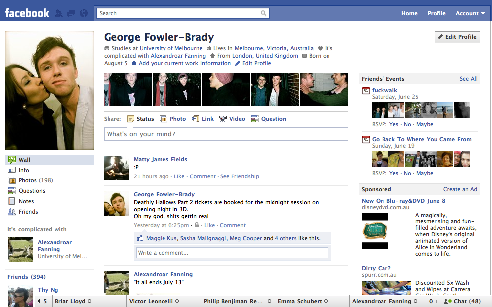Complex UX
Rich data presentation
Complex UX
Delivery across platforms

Complex UX
Delivery across devices
Complex UX
Responsive design
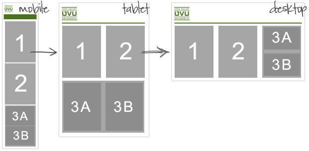Complex UX
Responsive design
CSS TricksClient logic
The Transition trend
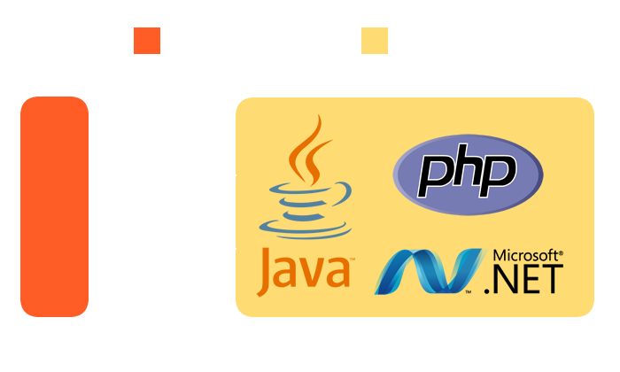Client logic
The Transition trend
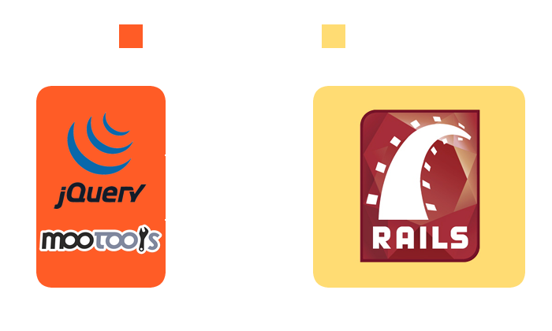Client logic
The Transition trend
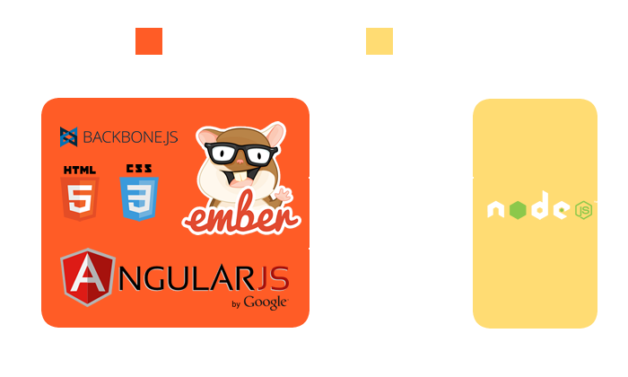Client logic
Web Platform
browser = runtime
Client logic
Web Platform

Client logic
Web Platform
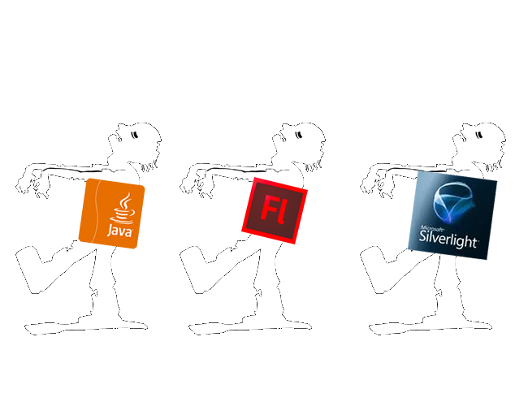Interactivity
Touch interfaces
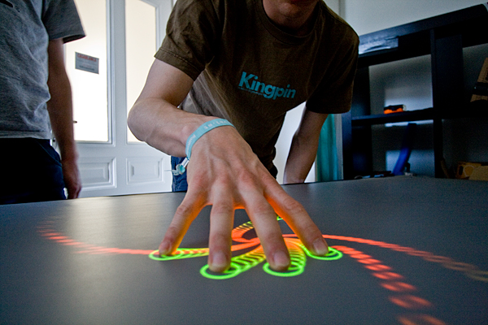Interactivity
Touch interfaces
- Different UX elements
- Touch events
- Gestures
Interactivity
Touch interfaces
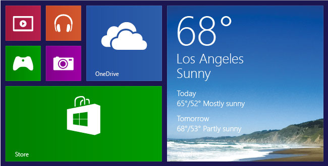Interactivity
Leap Motion: gesture control device
DEMOJavaScript everywhere
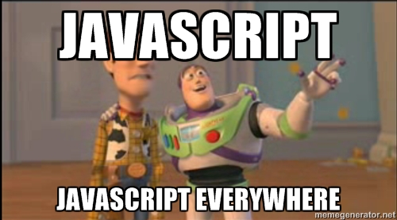JS features
- dynamic typing
- prototypal inheritance
- first-class functions
ECMAScript
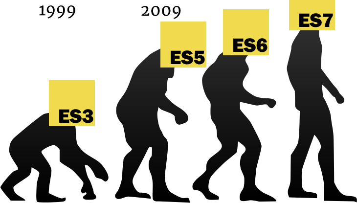JS Performance

Unreal Engine
running in a browser
Asm.js
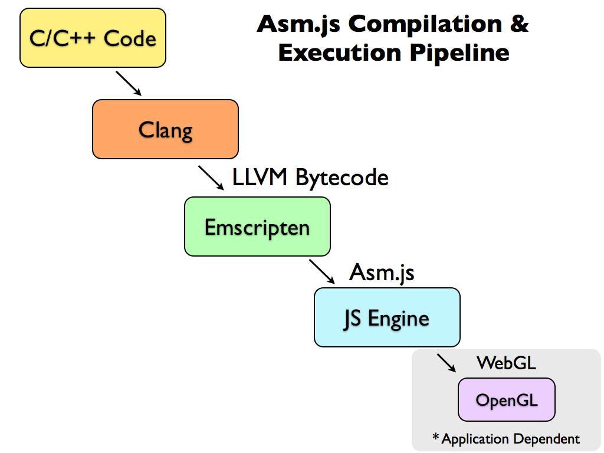Emscripten
- Qt
- Graphviz
- Emulators
- Webkit
JavaScript everywhere
The assembly of the Web
Compiled languages
- CoffeeScript
- ClojureScript
- TypeScript
Node.js
Node.js
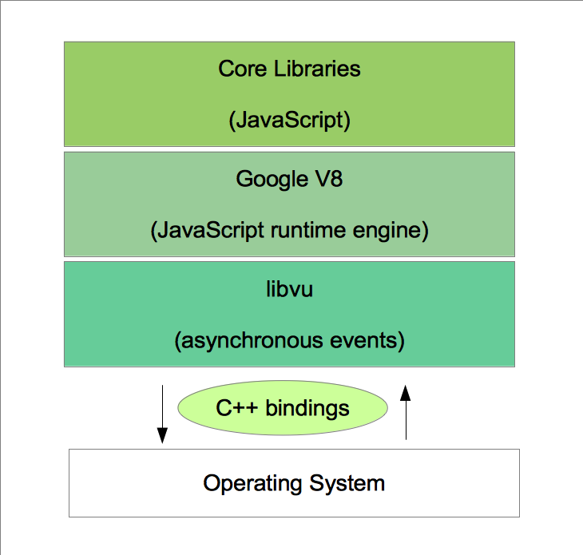Node.js at PayPal
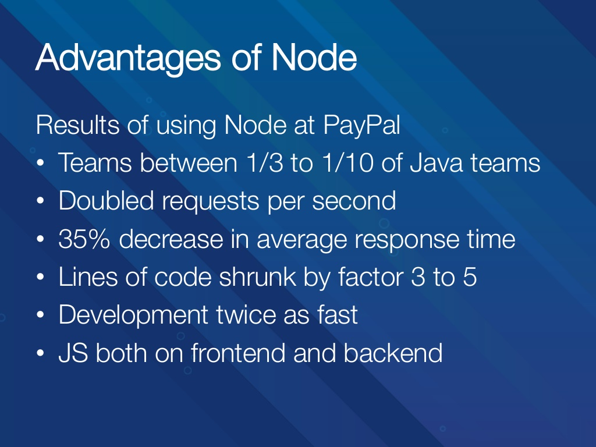Full-stack developers
UX + Front + Back = ♥
Web interfaces
js really everywhere
Web interfaces
js really everywhere
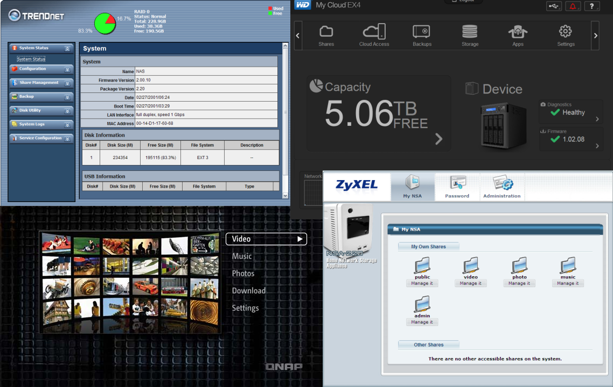Tessel
js programmable hardware
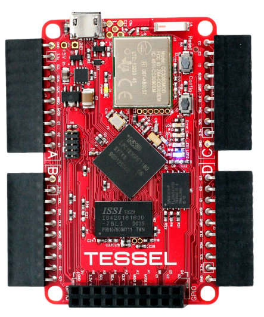Tessel
js programmable hardware
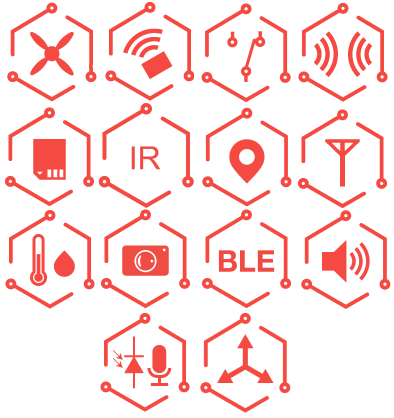Tessel
js programmable hardware
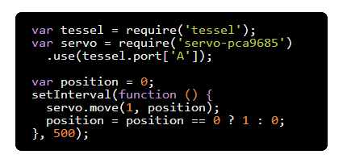node-copter
Flying JavaScript
wigwag
smart environment sensor
leap
gesture control device
DEMODAWN
Horizon TV application
DAWN

DAWN
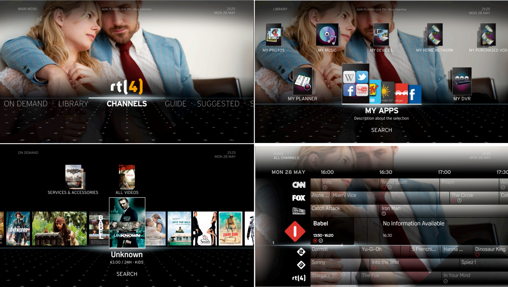Web standards
HTML5
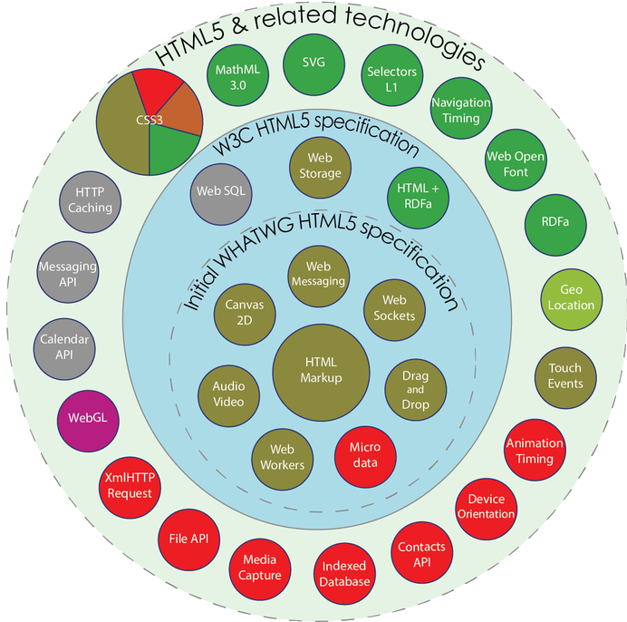Declarative HTML5
Hides real complexity
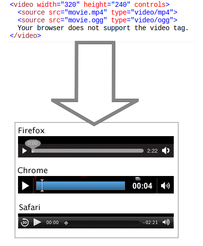Web API's
access to device features
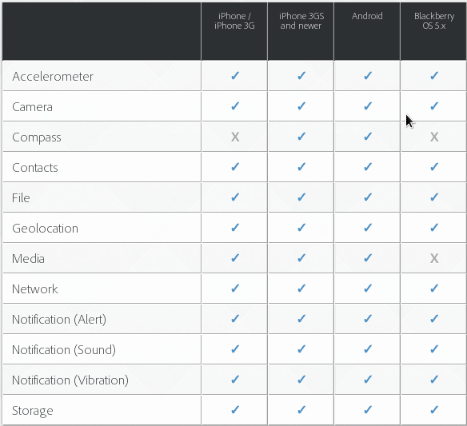Web API Demo
CSS shader filters
not only about shapes and colors
CSS shader filters
.shader {
-webkit-filter: custom(url(shaders/sphere.vs)
mix(url(shaders/sphere.fs) multiply source-atop), ...);CSS shader filters
CSS animations
makes smth move
@keyframes infinite-spinning {
from {
transform: rotate(0deg);
}
to {
transform: rotate(360deg);
}
}CSS filters
PS in your browser
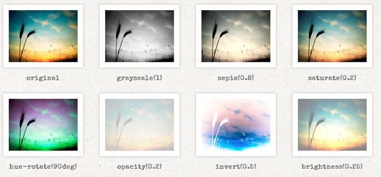Web typography
- Text effects
- Icon fonts
- OpenType features
Web typography
Web standards
Web standards

W3C members
R.I.P.
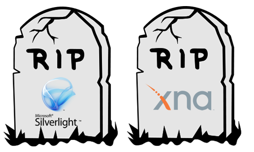Open Browsers
- WebKit/Blink
- Chromium
- Firefox
Open Tools
- Atom
- Angular
- Mocha
- Grunt
- Node.js
trainings
our training
All about Front end
- 3 hours a day
- 3 times a week
- ~10 weeks
- completed 2 times
- ~40 new front end developers
Frontend Course Curriculum
- Front-end Inspiration
- HTML & CSS basics Layout Practice
- Sublime Text. Responsive Web Design
- Styling Things and Web typography I
- JavaScript Basics, Inheritance, Workshop
- DOM basics
- Templating, jQuery, CSS Animation
- HTTP, Fiddler
- Chrome DevTools + profiling, Ajax
- WebSockets
- CSS preprocessors, JavaScript Web APIs
- Project structure and asset management
- Testing JavaScript Applications
responsive web design
simple task for practice
DEMOyoutube app
by Kirill Dimura
DEMOProblems
for students
- too much information
- not enough time
- hard to combine with university
- too much to learn
preconditions
what to learn before
- algorithms
- programming paradigms
- data structures
- async
- functional programming basics
- architecture and design principles
questions